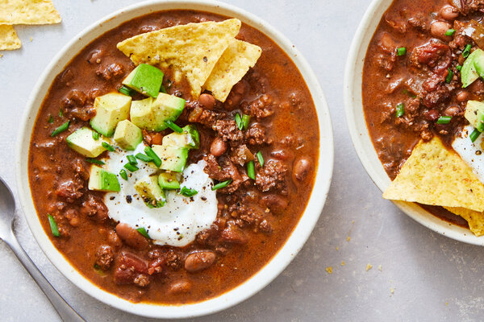

Chili

Description
The beans! The spices! The meat! When it comes to homemade Chili, what's
not to love?
With a myriad of flavorful ingredients and just four simple steps, it's no
wonder this is known as our best Chili recipe. This homemade Chili recipe
pairs perfectly with a crisp fall day.
Warm-up after a little Sunday football or cozy up to a weekday meal your
family will love.
If you're like us, one bowl of our Chili made from scratch is never
enough, especially when piled high with all our favorite toppings!
Ingredients
- 1 lb ground beef (at least 80% lean)
- 1 cup chopped onions
- 2 cloves garlic, finely chopped, or 1/4 teaspoon garlic powder
- 1 tablespoon chili powder
- 2 teaspoons chopped fresh or 1 teaspoon dried oregano leaves
- 1 teaspoon ground cumin
- 1/2 teaspoon salt
- 1/2 teaspoon red pepper sauce
- 1 can (14.5 oz) Muir Glen™ organic diced tomatoes, undrained
- 1 can (19 oz) Progresso™ red kidney beans, undrained
-
In 3-quart saucepan, cook beef, onions and garlic over medium heat 8 to
10 minutes, stirring occasionally, until beef is thoroughly cooked;
drain.
-
Stir in chili powder, oregano, cumin, salt, pepper sauce and tomatoes.
-
Heat to boiling over high heat. Reduce heat just enough so mixture
bubbles gently. Cover; cook 1 hour, stirring occasionally.
-
Stir in kidney beans. Heat to boiling over high heat. Reduce heat just
enough so mixture bubbles gently. Cook uncovered about 20 minutes,
stirring occasionally, until desired thickness.